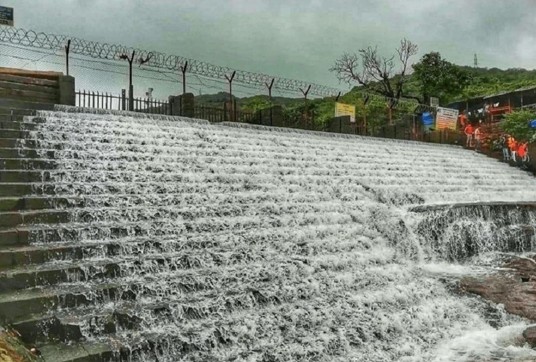
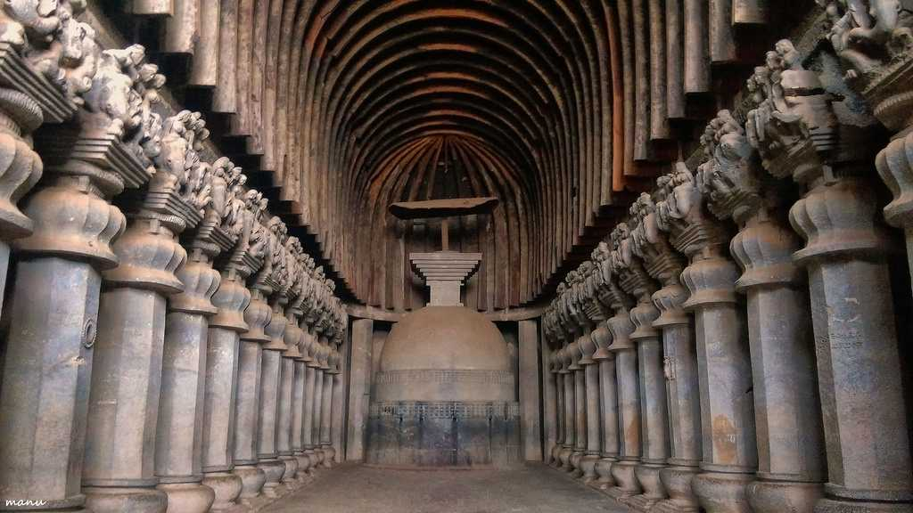
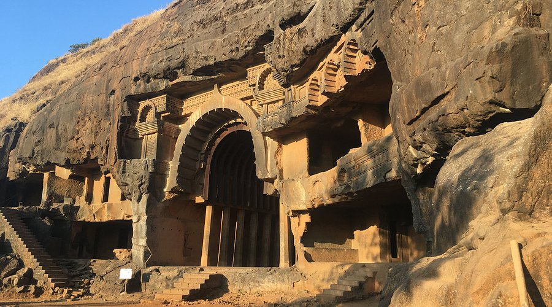
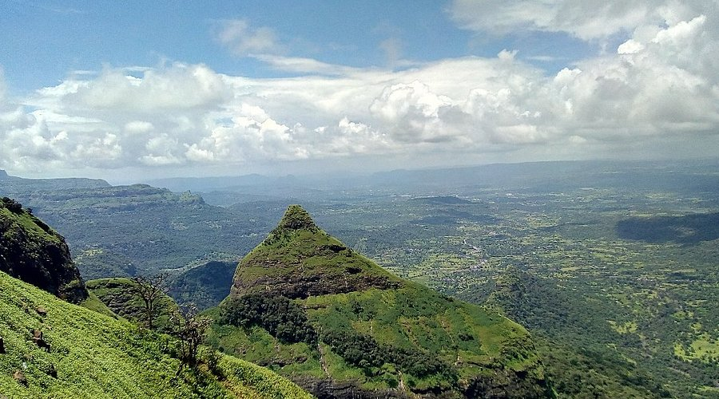
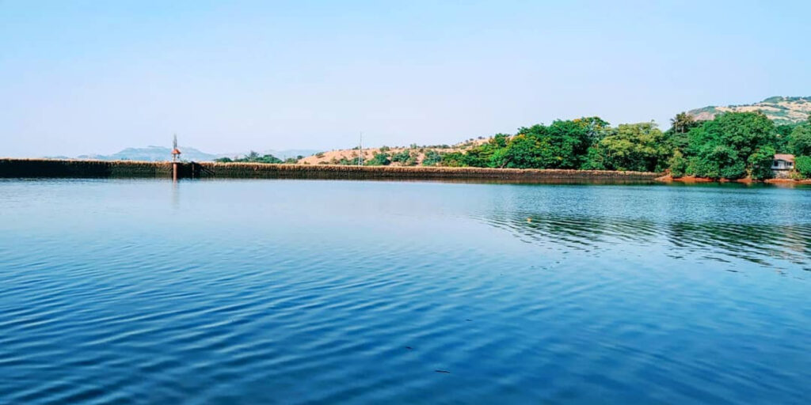
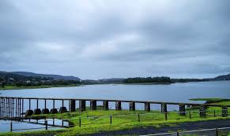

Bhushi Dam: A Refreshing Retreat
Bhushi Dam is a popular picnic spot in Lonavala, known for its scenic beauty and refreshing water.
Fun Fact:
~It is a favorite spot for locals and tourists alike to beat the heat!
Things to Explore at Bhushi Dam:
-
The Waterfalls:
Enjoy the cascading waterfalls during the monsoon season.
-
The Picnic Spots:
Relax and unwind at the designated picnic areas around the dam.
-
The Scenic Views:
Marvel at the picturesque views of the surrounding hills and valleys.
-
The Adventure Activities:
Engage in water sports and boating activities in the dam area.
-
The Photography:
Capture stunning photographs of the dam and its surroundings.
Why Visit Bhushi Dam?
!Because it’s not just a dam, but a refreshing retreat that offers a perfect escape into nature’s beauty!

Karla Caves: Ancient Rock-Cut Marvels
Karla Caves are ancient rock-cut caves located near Lonavala, known for their intricate carvings and historical significance.
Fun Fact:
~They date back to the 2nd century BC and are a UNESCO World Heritage Site!
Things to Explore at Karla Caves:
-
The Chaitya Hall:
Marvel at the grand chaitya hall with its impressive rock-cut architecture.
-
The Viharas:
Explore the monastic cells used by Buddhist monks in ancient times.
-
The Sculptures:
Admire the intricate carvings and sculptures adorning the walls of the caves.
-
The Historical Significance:
Learn about the history and significance of these ancient caves in Buddhism.
-
The Scenic Views:
Enjoy panoramic views of the surrounding hills from the caves.
Why Visit Karla Caves?
!Because it’s not just a historical site, but a journey back in time to explore the rich heritage of Buddhism!

Bhaja Caves: A Hidden Gem
Bhaja Caves are lesser-known rock-cut caves near Lonavala, offering a serene and peaceful environment for exploration.
Fun Fact:
~They are believed to be older than the Karla Caves and are a hidden gem for history enthusiasts!
Things to Explore at Bhaja Caves:
-
The Chaitya Hall:
Visit the chaitya hall with its impressive rock-cut architecture and stupas.
-
The Viharas:
Explore the monastic cells used by Buddhist monks in ancient times.
-
The Sculptures:
Admire the intricate carvings and sculptures adorning the walls of the caves.
-
The Scenic Beauty:
Enjoy the tranquil surroundings and scenic views of the hills.
-
The Peaceful Atmosphere:
Experience the serene environment perfect for meditation and reflection.
Why Visit Bhaja Caves?
!Because it’s not just a cave complex, but a hidden gem that offers a glimpse into ancient Buddhist architecture!

Lion Point: A Scenic Viewpoint
Lion Point is a popular viewpoint in Lonavala, offering stunning panoramic views of the surrounding hills and valleys.
Fun Fact:
~It is named after the lion-shaped rock formation visible from the viewpoint!
Things to Explore at Lion Point:
-
The Scenic Views:
Marvel at the breathtaking views of the Sahyadri mountains and lush greenery.
-
The Sunrise and Sunset:
Experience mesmerizing sunrises and sunsets from this vantage point.
-
The Photography:
Capture stunning photographs of the landscape and the lion-shaped rock formation.
-
The Local Cuisine:
Savor local snacks and refreshments available at nearby stalls.
-
The Adventure Activities:
Engage in trekking and hiking in the surrounding areas.
Why Visit Lion Point?
!Because it's not just a viewpoint, but a place that offers a perfect blend of natural beauty and adventure!

Tungarli Lake: A Serene Escape
Tungarli Lake is a serene lake located near Lonavala, known for its tranquil surroundings and picturesque views.
Fun Fact:
~It is a popular spot for picnics and nature walks!
Things to Explore at Tungarli Lake:
-
The Scenic Beauty:
Enjoy the breathtaking views of the lake surrounded by lush greenery.
-
The Boating:
Experience peaceful boat rides on the calm waters of the lake.
-
The Walking Trails:
Stroll along the well-maintained walking trails around the lake.
-
The Picnic Spots:
Relax and unwind at the designated picnic areas by the lake.
-
The Photography:
Capture stunning photographs of the serene landscape and wildlife.
Why Visit Tungarli Lake?
!Because it's not just a lake, but a serene escape into nature's tranquility!

Lonavala Lake: A Tranquil Retreat
Lonavala Lake is a tranquil lake located in the heart of Lonavala, offering a peaceful retreat for visitors.
Fun Fact:
~It is a popular spot for birdwatching and nature photography!
Things to Explore at Lonavala Lake:
-
The Scenic Views:
Marvel at the picturesque views of the lake surrounded by hills and greenery.
-
The Boating:
Enjoy serene boat rides on the calm waters of the lake.
-
The Walking Trails:
Stroll along the scenic walking trails around the lake.
-
The Picnic Spots:
Relax and unwind at the designated picnic areas by the lake.
-
The Wildlife:
Spot various bird species and other wildlife in the area.
Why Visit Lonavala Lake?
!Because it's not just a lake, but a tranquil retreat that offers a perfect escape into nature’s beauty!
s